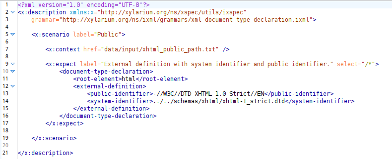
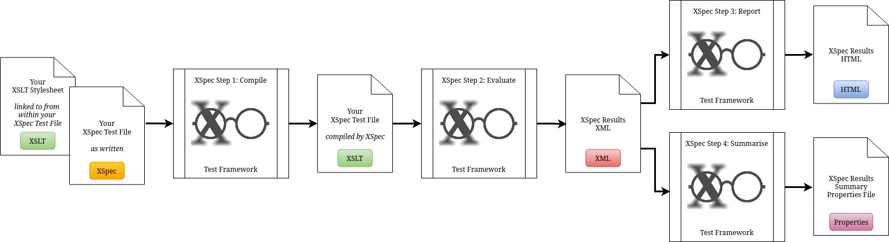
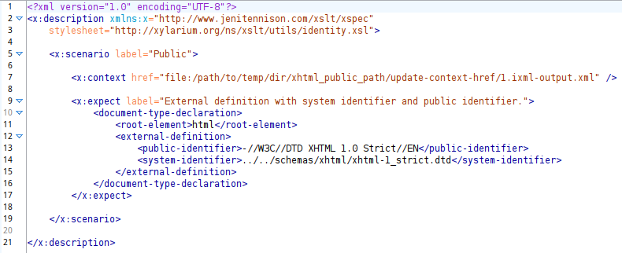

One of the maintainers of XSpec, Amanda Galtman, has identified a relatively simple way that this can be done using the invisible-xml function in XPath 4.0[GALMED][XPATH4]. Unfortunately, the specification for XPath 4.0 is still in development and not yet widely supported. However, Amanda’s solution can already be used if you write your XSpec tests as XQuery and run them in BaseX with the Markup Blitz library. Once the invisible-xml function is supported in an XSLT processor, it should also be possible to use it in XSpec tests written for XSLT.
When I started thinking about how XSpec’s XSLT process might be adapted for testing iXML, the main differences that I identified were:
the context is text, not XML
the code being tested is an iXML grammar, not an XSLT stylesheet
I wanted to make as few changes as possible to the way that the XSpec test file would be written[WRITEXSPEC] and realised that this would be possible if I could apply the iXML transformation to the context before the expectations were evaluated. So that the XSpec would be able to easily differentiate a test file written for iXML from one written for XSLT, XQuery or Schematron, I added a new attribute to the root element of the test file, named grammar, the value of which is expected to be a path to a file containing the iXML grammar being tested.
Figure 7. An example of an XSpec test file for iXML
|  |
In Figure 7, “An example of an XSpec test file for iXML”, the iXML grammar is specified on line 3 and the text to be converted to XML is stored in a separate file and specified using the href attribute on x:context (line 7). This is a standard option in XSpec that’s very useful if you’re re-using the same text in multiple scenarios. The contents of xhtml_public_path.txt can be seen in Figure 3, “Single-line text file containing a DOCTYPE declaration for XHTML”. The expected result is specified, as per usual, via the x:expect element (lines 9-16). Similar though it is, this test file is not a valid XSpec file so I also changed the namespace URI (line 2). During the iXML pre-processing step, when a valid XSpec file is created, the namespace URI is changed back to http://www.jenitennison.com/xslt/xspec.
Under the hood of the XSpec testing process, there are four main steps: compile, evaluate, report and summarise.
Figure 8. Steps in the XSpec process, with inputs and outputs
|  |
I decided to add the iXML transformation as an extra step, immediately before Compile; it’s not unprecedented, as XSpec already includes a pre-processing step when testing Schematron. I implemented this step using XProc, mostly so that I could take advantage of its support for iXML (p:ixml[2])[XPROCIXML] but also, if I’m honest, in part because it was a personal project and I enjoy working with XProc. This custom XProc step:
changes the namespace URI from http://xylarium.org/ns/xspec/utils/ixspec to http://www.jenitennison.com/xslt/xspec
replaces /x:description/@grammar with /x:description/@stylesheet which references an XSLT identity transform stylesheet
uses p:viewport to iterate over all the x:context elements and, for each:
uses p:ixml to transform the input (x:context/@href) into XML using the grammar (/x:description/@grammar) and stores the result as a temporary file
changes x:context/@href to reference the temporary file containing the result of the iXML transformation
uses resolve-uri() and p:xslt to change any x:expect/@href URIs that are relative to absolute.
Figure 9, “XSpec test file for iXML after pre-processing”, shows what the output of this step would be if it were applied to the example XSpec file shown in Figure 7, “An example of an XSpec test file for iXML”.
Figure 9. XSpec test file for iXML after pre-processing
|  |
If the iXML grammar is correct then the contents of 1.ixml-output.xml (the results of the iXML transformation) will now be the same as the contents of the x:expect element in Figure 7. This (temporary) XSpec file can now progress through the normal XSpec steps: compile, evaluate, report and summarise. If the result of the iXML transformation isn’t as expected then the differences will be displayed side-by-side in XSpec’s HTML report.